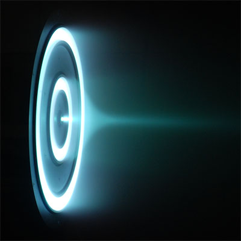

X3 is a Hall-effect thruster—a type of ion thruster in which the propellant (most commonly xenon) is accelerated by electric and magnetic fields. Such thrusters are safer and more fuel efficient than engines used in traditional chemical rockets. However, they currently offer relatively low thrust and acceleration.
X3 is a powerful ion thruster that could one day propel humans beyond Earth. The thruster was successfully tested few months ago, and could be selected by NASA as a crucial component of propulsion system for future Mars missions.
In July and August 2017 the X3 thruster broke records in performance during tests carried out at the NASA Glenn Research Center.
It produced 5.4 newtons of force compared with previous record of 3.3 newtons, doubled the operating current record (250 amperes vs. 112 amperes) and ran at a slightly higher power (102 kW vs. 98 kW).
"Our test was a huge success. We were both able to operate the thruster up to full power, demonstrating that it performed well, and find a few issues to work out for next year. They were all minor and easy to fix, but they could have been problematic if we found them during our 100-hour attempt," said Scott Hall of the Plasmadynamics and Electric Propulsion Laboratory at U-M in an interview with Astrowatch.net.
The upcoming 100-hour test is planned for spring 2018. During this testing campaign, the X3 thruster will be integrated with Aerojet Rocketdyne's power processing system.
Hall noted that the recent testing with the X3 was designed to be a risk reduction test for our 100-hour test for NASA's NextSTEP program.
"We wanted to shake everything down—the thruster, the auxiliary equipment, and the vacuum facility—before attempting our 100-hour run, which is supposed to be at 100 kW," Hall said.
X3 is one of three prototype engines that could be selected by NASA to power future manned missions to Mars. Scientists estimate that such a human mission to the Red Planet will require a propulsion system operating at least 200kW.
Given that X3 features the largest throttling capability of any Hall thruster to date, seven firing configurations and power levels ranging from 2 to 200 kW, it could be the best choice to become a fundamental component of spacecraft carrying astronauts beyond Earth.
"The X3 has the potential to be very critical for upcoming crewed Mars missions. The reason is that the X3 is a very flexible thruster with a large throttling range," Hall noted.
He added that at lower power levels (like a single X3 thruster), the X3 is great for moving a lot of cargo very efficiently. These types of missions would probably leave in advance of the astronauts and deliver cargo to the planet before their arrival, then fly back to Earth to reload for the next mission.
Furthermore, at higher power levels (over 600 kW, a few X3s clustered together), the X3 has the potential to carry astronauts to Mars.
"NASA has not decided exactly how it wants its Mars missions to look, but a lot of studies have been done looking at different ways you could use 100 to 300 kW electric propulsion like the X3, and even as high as 800 kW for when solar panels get more powerful," Hall said.
Notably, studies have shown that around the 600-700 kW mark, high-power electric propulsion like the X3 becomes as fast as traditional chemical propulsion, but is much more efficient. This efficiency could be decisive when NASA will be choosing the engines for future mission to Mars or other celestial bodies in the solar system.
"The X3 was actually originally funded by the United States Air Force, not NASA, who are interested in thrusters like the X3 for moving heavy things around on Earth orbit very quickly. The X3 can be used in those kinds of applications like fast, efficient low-Earth orbit (LEO) to geostationary orbit (GEO) transfers, as well as cargo and crew transport to a huge number of interesting targets, including near-Earth asteroids and Mars's moons, as well as Mars itself. It could also potentially be used on deep-space missions, although you probably need nuclear power for those since solar power drops off so quickly," Hall concluded.